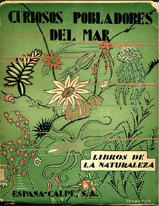
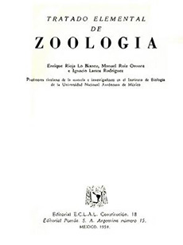

Referencias
- Cifuentes, L.J., P.Torres y M. Frías. 2003. El océano y sus recursos. VII. Flujos de energía en el mar: reproducción y migraciones. Fondo de cultura para todos. Serie La ciencia para todos. México D.F., 154 p.
- Frutos, I. 2006. Obituary: Enrique Rioja (1895-1963).Scientia Marina, 70S3:351-352.
- Soldevilla, O.C. 1998. La Cantabria del exilio: una emigración olvidada (1936-1975). Universidad de Cantabria. Asamblea Regional de Cantabria. 274 p.
Enrique Rioja Lo-Bianco
1895 - 1963
Enrique Rioja Lo-Bianco fue un biólogo pionero en el estudio de los gusanos marinos (poliquetos) en España y en México. Nació en España en 1895 y falleció en la ciudad de México en 1963. Estudió en la Universidad de Madrid la licenciatura de Ciencias Naturales y obtuvo el doctorado por su investigación sobre fauna anélida. En su país se convirtió en especialista en zoología de invertebrados marinos e hidrobiología.
Debido a la guerra civil española llegó como exiliado a México en 1939. Fue invitado a integrarse como investigador al Instituto de Biología de la UNAM. Ahí ocupó la jefatura del Departamento de Hidrobiología donde creó el Laboratorio de Hidrobiología, al que consolidó como centro de investigación.
Participó en la estructuración de los planes de estudio de la Facultad de Ciencias de la UNAM, en la preparación de los Anales del Instituto de Biología (publicación de dicho instituto) y en los planes para la creación del Museo de Historia Natural.
Realizó varias exploraciones a lo largo de la costa del Pacífico mexicano, producto de las cuales registró más de 300 especies de poliquetos (algunas de ellas no conocidas anteriormente) de las cuales más de 43 son válidas todavía en la actualidad.
Realizó más de 200 trabajos de investigación sobre poliquetos, crustáceos, esponjas de agua dulce y temas variados de hidrobiología. Varios de estos trabajos contienen ilustraciones realizadas por él mismo. Además de dedicarse a la docencia tanto en la UNAM como en el Instituto Politécnico Nacional, escribió libros de texto y de divulgación como son Tratado elemental de zoología, La vida en el mar, Zoología hispanoamericana (invertebrados) y El mar, acuario del mundo, entre otros.
Naturalistas siglo XIX
Aportación

Enrique Rioja, Curiosos pobladores del mar, Madrid, Espasa Calpe, 1933
